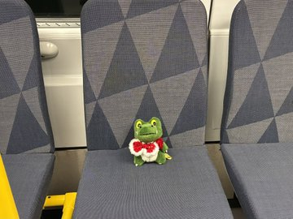
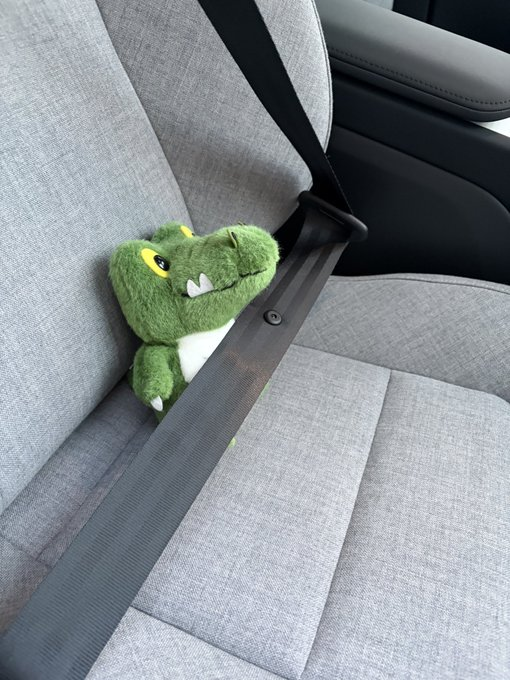
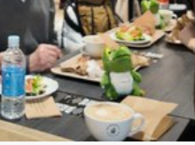
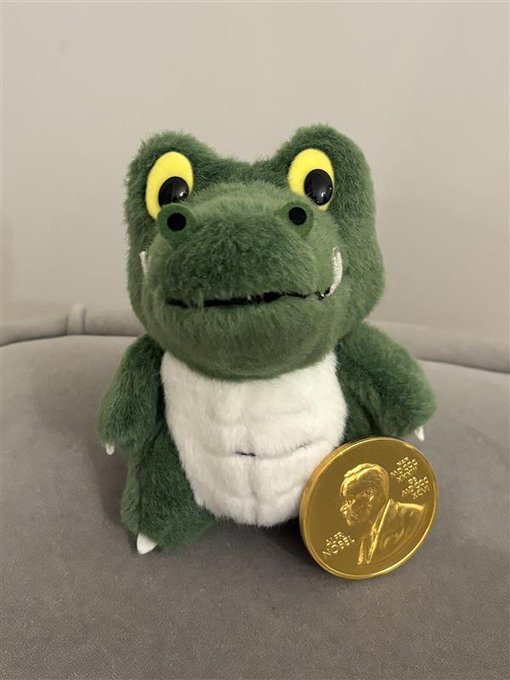
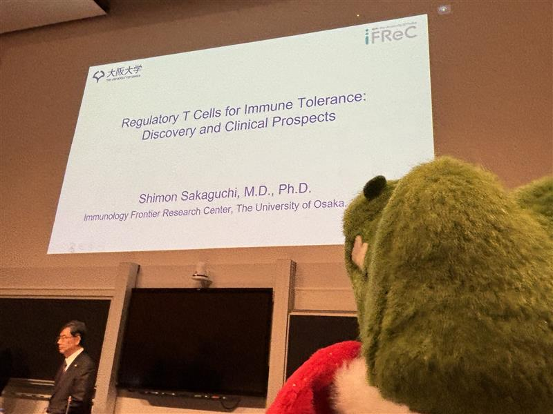
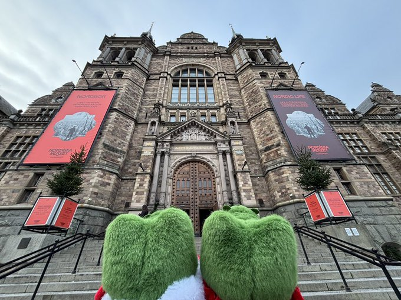

祝！坂口志文先生ノーベル賞受賞
ワニ博士のストックホルム潜入記
2025年12月25日 投稿
大阪大学の坂口志文先生が2025年ノーベル生理学・医学賞を受賞されました！そこで、ワニ博士が授賞式会場へ駆けつけました。その様子を紹介します。
1. いざ、授賞式会場へ！


電車と車を乗り継いで、ちょっと緊張気味のワニ博士。
2. 豪華なノーベル晩餐会を満喫



シャンパンで乾杯！見たこともない豪華なお料理に興味津々です。
3. 憧れのメダル…？

なんと、メダルチョコレートをゲット！食べるのがもったいない…
4. 勉強も忘れない

坂口先生の研究内容を真剣に聴くワニ博士。制御性T細胞、難しいけどすごい！
5. 最後に記念撮影

北欧博物館の前で、双子のワニ博士で記念に一枚！